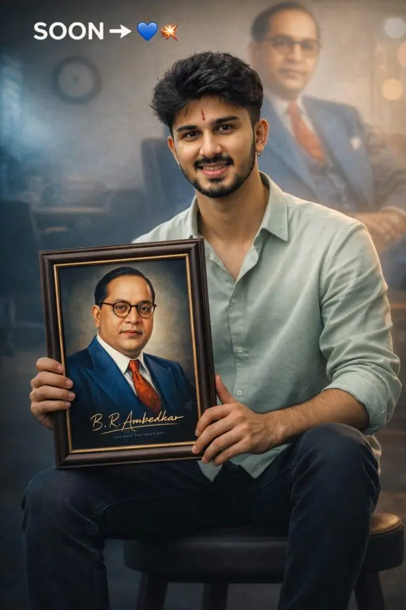

If you are looking to create unique and respectful photos for Ambedkar Jayanti 2026, this article will guide you with simple and creative prompts.
Let’s explore how you can design powerful images with Babasaheb.
Want more awesome prompts?
Join our community and get the latest viral prompts daily.
Follow on Instagram





Babasaheb Ambedkar Jayanti is more than just a celebration—it is a reminder of his vision for a fair and equal society.
Creating and sharing photos with Babasaheb is a modern way to keep his thoughts alive and reach more people.
By using the right prompts, you can design meaningful and respectful images that truly reflect his values.
Whether you post them on WhatsApp, Instagram, or Facebook, your creations can inspire others and spread awareness.
Take a moment this 14 April to honor Babasaheb Ambedkar in your own creative way. Let your photos speak about equality, knowledge, and justice—just like he did.